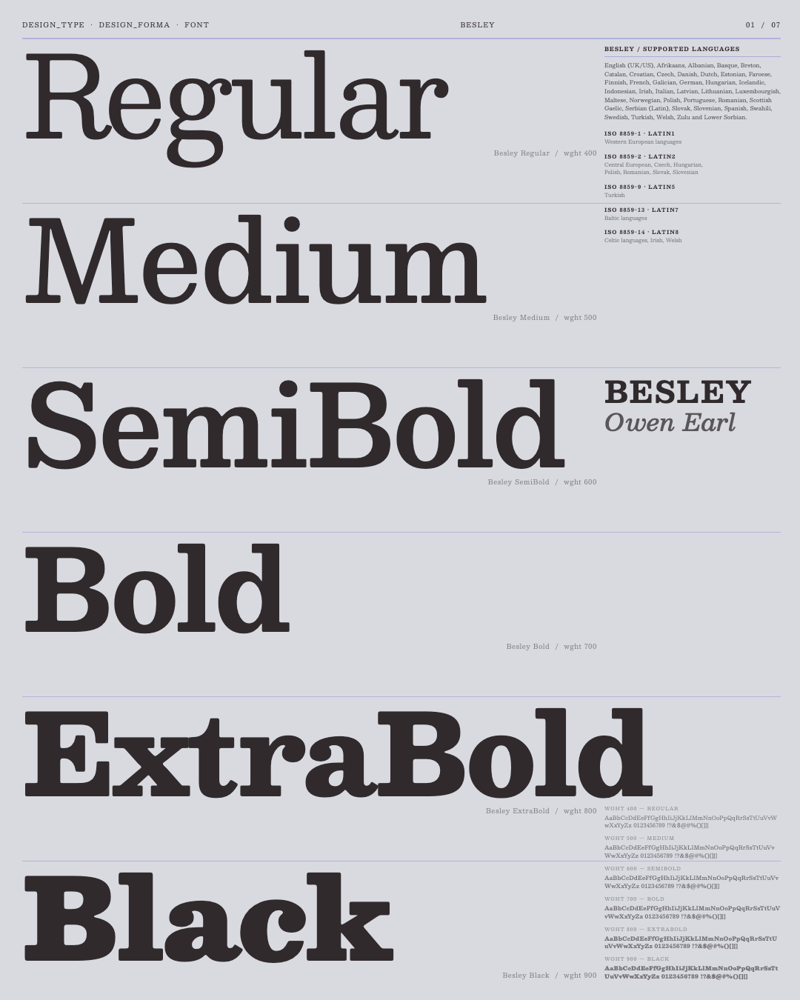
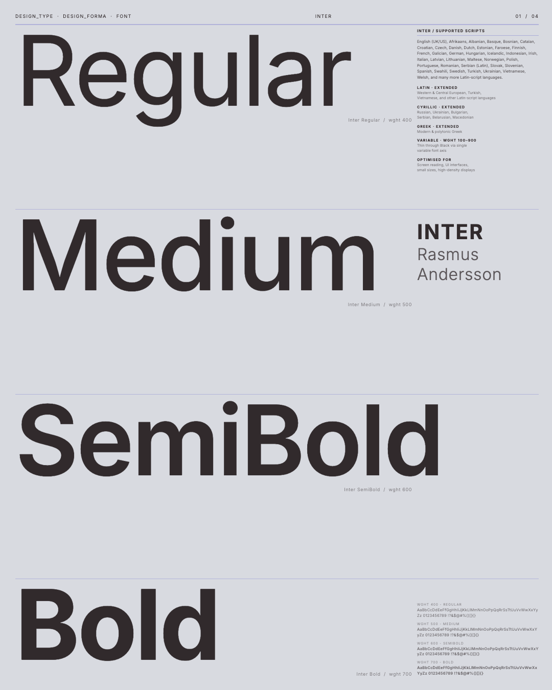
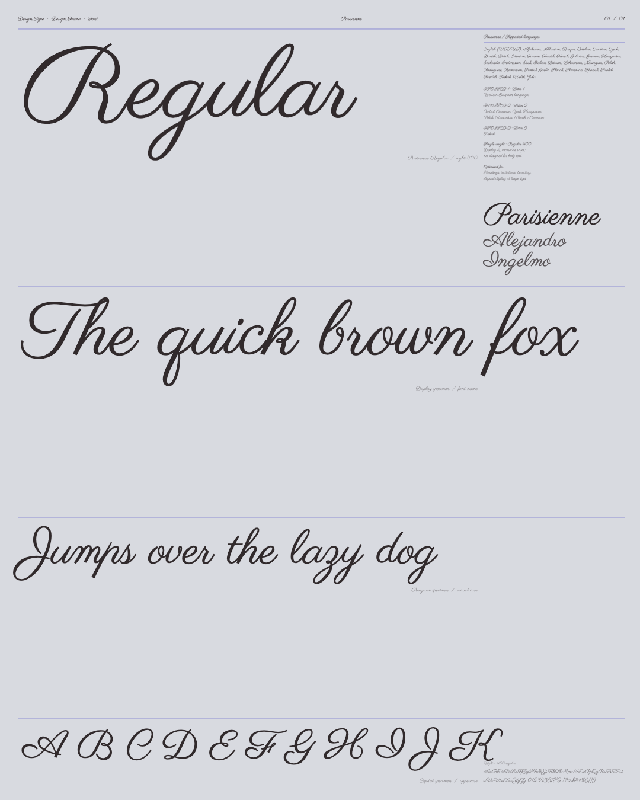
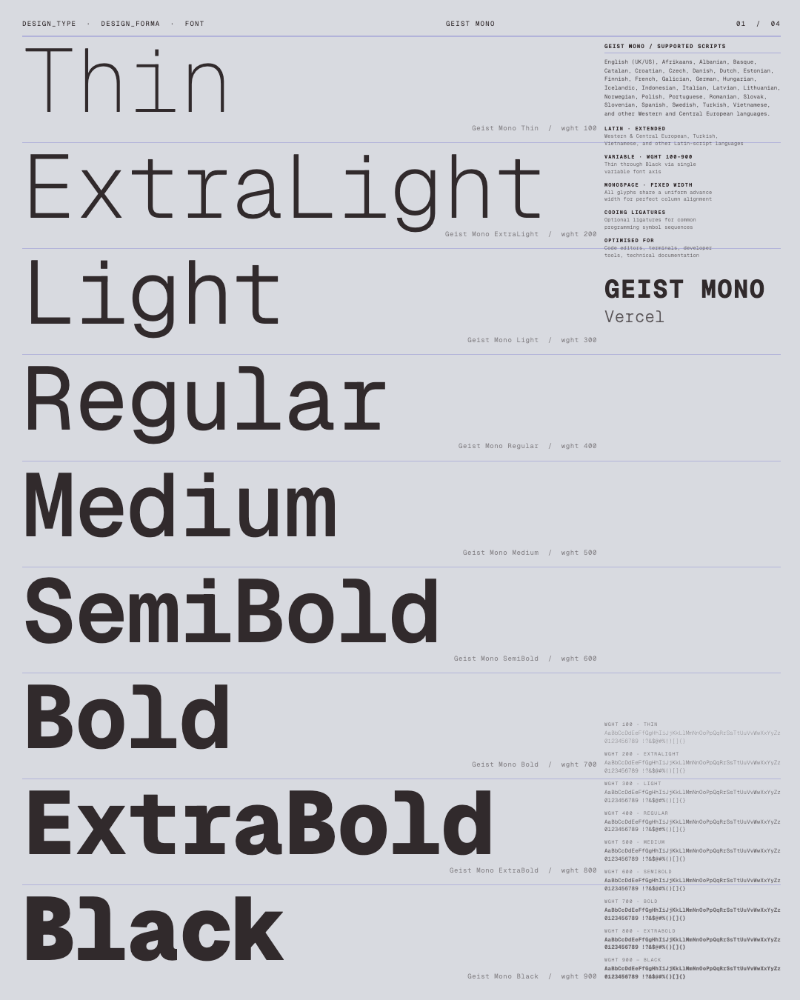
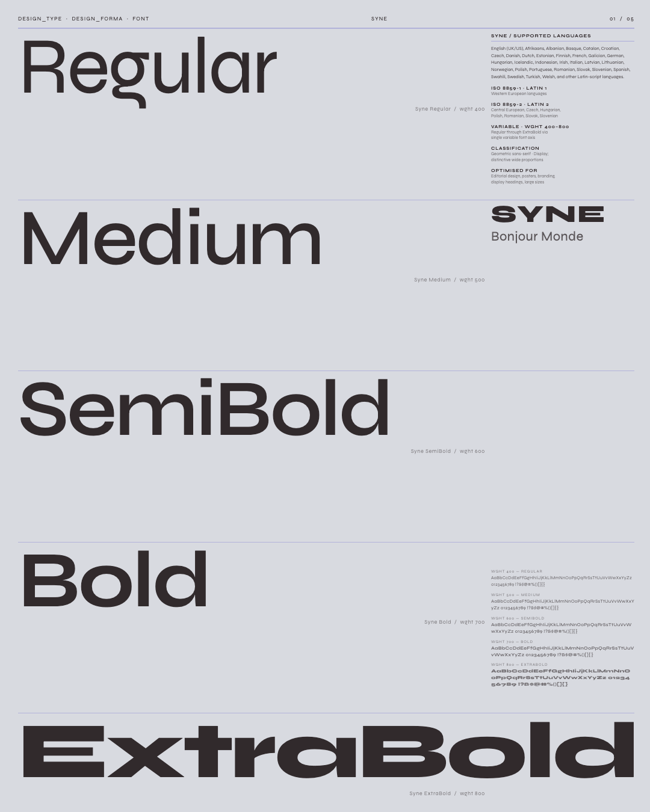
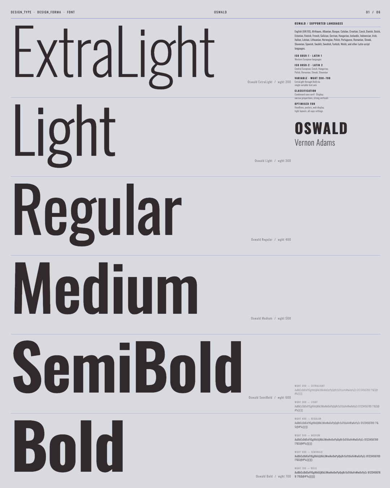
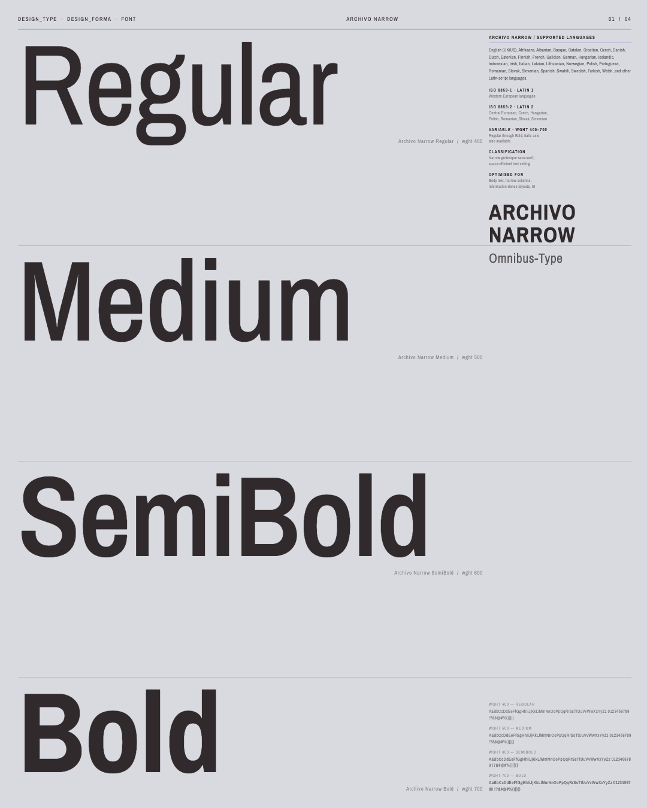

AI* Poster Series
Designing a system, then letting AI execute it.
*Claude Code was used to generate 16 poster designs in 2 days, from a templatized HTML design system I architected. This experiment tested computer vision interpretation and the limits of stylistic variation within a constrained design system.















Use your keyboard arrows